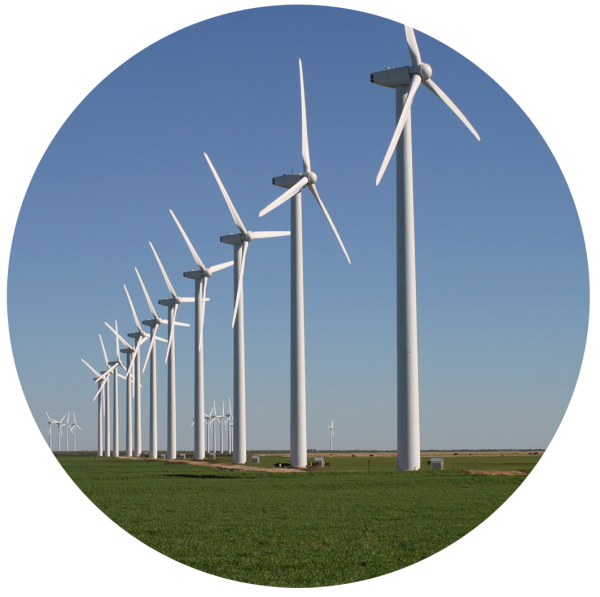

Wind Energy: The Power of the Air
Wind energy is the use of air flow through wind turbines to mechanically power generators for electric power. It is an extremely clean source of power, utilized both on land (onshore) and in the ocean (offshore).
Modern wind turbines capture the kinetic energy of the wind and convert it into rotational energy, which is then fed into a generator. The power output depends significantly on the speed and consistency of the wind.
Offshore wind farms are becoming increasingly popular as they can utilize stronger and more consistent wind patterns away from coastal obstructions.